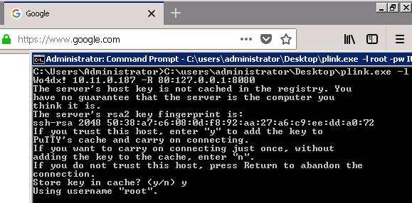

15.5.1 - Exercises
1. Experiment with the various tunneling options presented.
2. Use SSH to proxy out your web surfing through your Kali host.
Downloaded plink.exe from Kali to my WIN 7 VM and ran this command:
C:\users\administrator\desktop\plink.exe -l root -pw (password) 10.11.0.187 -D 127.0.0.1:8080
In FireFox on WIN 7 VM, set SOCKS host to 127.0.0.1:8080, selected SOCKSv5, and proxy DNS.
